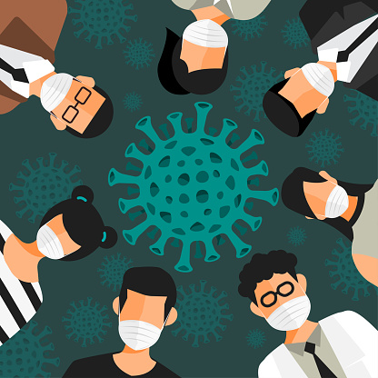
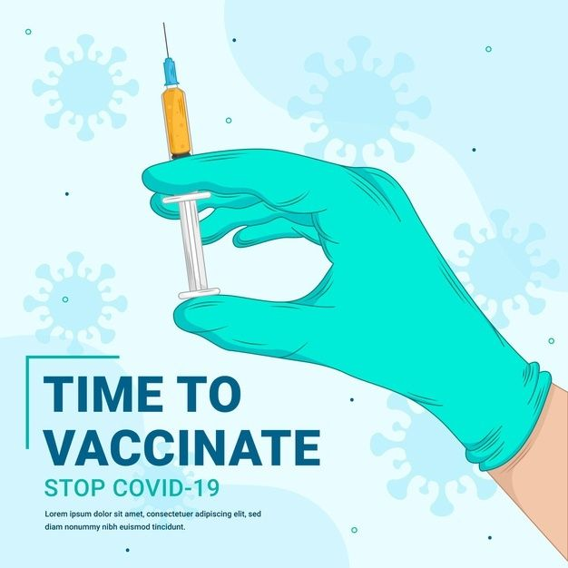

Apa itu Covid-19 ?
Coronavirus adalah suatu kelompok virus yang dapat menyebabkan penyakit pada hewan atau manusia. Beberapa jenis coronavirus diketahui menyebabkan infeksi saluran nafas pada manusia mulai dari batuk pilek hingga yang lebih serius seperti Middle East Respiratory Syndrome (MERS) dan Severe Acute Respiratory Syndrome (SARS). Coronavirus jenis baru yang ditemukan menyebabkan penyakit COVID-19.
Gejala-gejala COVID-19 yang paling umum adalah demam, batuk kering, dan rasa lelah. Gejala lainnya yang lebih jarang dan mungkin dialami beberapa pasien meliputi rasa nyeri dan sakit, hidung tersumbat, sakit kepala, konjungtivitis, sakit tenggorokan, diare, kehilangan indera rasa atau penciuman, ruam pada kulit, atau perubahan warna jari tangan atau kaki. Gejala-gejala yang dialami biasanya bersifat ringan dan muncul secara bertahap. Beberapa orang menjadi terinfeksi tetapi hanya memiliki gejala ringan.
Sebagian besar (sekitar 80%) orang yang terinfeksi berhasil pulih tanpa perlu perawatan khusus. Sekitar 1 dari 5 orang yang terinfeksi COVID-19 menderita sakit parah dan kesulitan bernapas. Orang-orang lanjut usia (lansia) dan orang-orang dengan kondisi medis penyerta seperti tekanan darah tinggi, gangguan jantung dan paru-paru, diabetes, atau kanker memiliki kemungkinan lebih besar mengalami sakit lebih serius. Namun, siapa pun dapat terinfeksi COVID-19 dan mengalami sakit yang serius. Orang dari segala usia yang mengalami demam dan/atau batuk disertai dengan kesulitan bernapas/sesak napas, nyeri/tekanan dada, atau kehilangan kemampuan berbicara atau bergerak harus segera mencari pertolongan medis. Jika memungkinkan, disarankan untuk menghubungi penyedia layanan kesehatan atau fasilitas kesehatan terlebih dahulu, sehingga pasien dapat diarahkan ke fasilitas kesehatan yang tepat.
Informasi Seputar Covid-19

Protokol Kesehatan
Satu-satunya cara untuk kita menjalani hidup di masa pandemi ini adalah dengan cara melaksanakan protokol kesehatan yang telah diatur Pemerintah. Program ini disebut 5M, yaitu: memakai masker, mencuci tangan menggunakan sabun dan air yang mengalir, menjaga jarak, menjauhi kerumunan, serta membatasi mobilisasi.
Covid-19 Varian Delta
Virus Corona varian Delta merupakan salah sat varian virus yang sangat menular. Virus ini pertama kali ditemukan di India pada Desember 2020. Strain virus SARS-CoV-2 ini dengan cepat menjadi varian dominan dan menyebabkan kekacauan di negara tersebut. Menurut CDC, Virus corona varian ini telah mencakup 83% kasus Covid-19 di Amerika Serikat.
Produktif di Tengah Pandemi
COVID-19 belum usai, bagaimana cara agar tetap produktif dan kreatif di tengah pandemi? Meskipun kini telah ada kebijakan new normal, setiap orang tetap diwajibkan menjaga jarak dan mengikuti sejumlah protokol kesehatan. Bagi kamu yang masih beraktivitas di rumah, yuk, simak tips berikut ini!
Program Vaksin
Program Vaksinsasi Massal yang telah dilaksanakan pemerintah telah dimulai sejak 13 Januari 2021. Pelaksanaan Vaksin tersebut pertama kali dilakukan kepada Presiden Republik Indonesia, yakni Bapak Joko Widodo. Setelah 1 bulan berlalu, program ini sedang memasuki tahap kedua yakni dengan jumlah sasaran 16,9 juta petugas pelayanan publik.